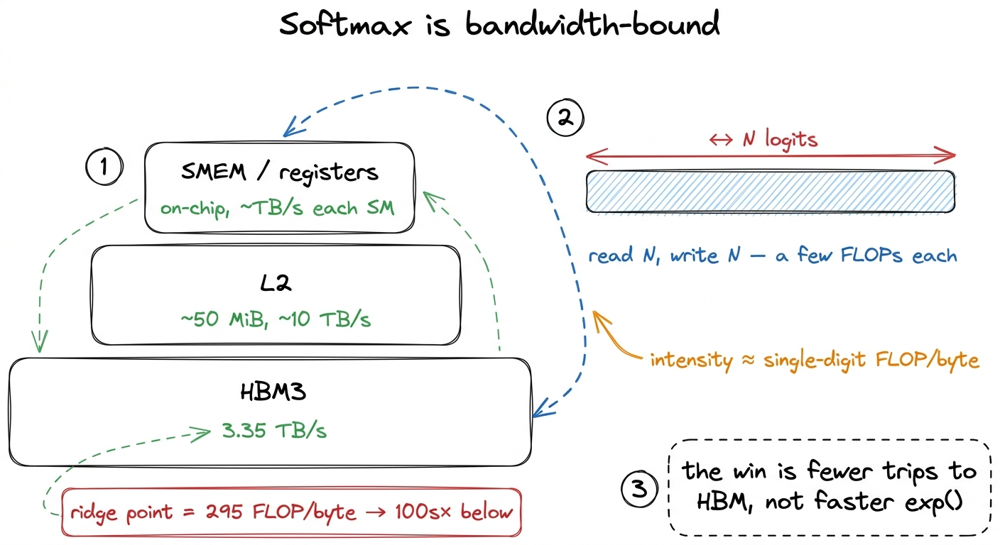
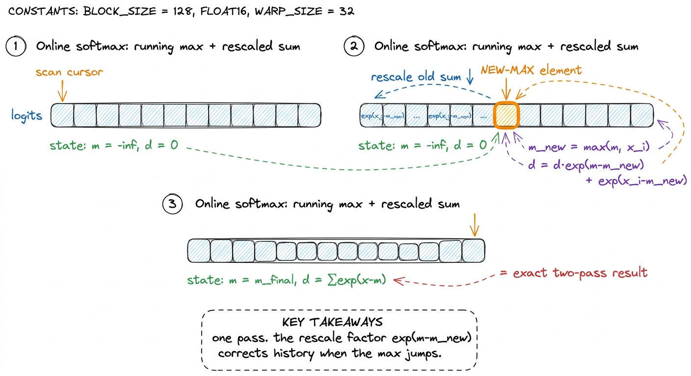
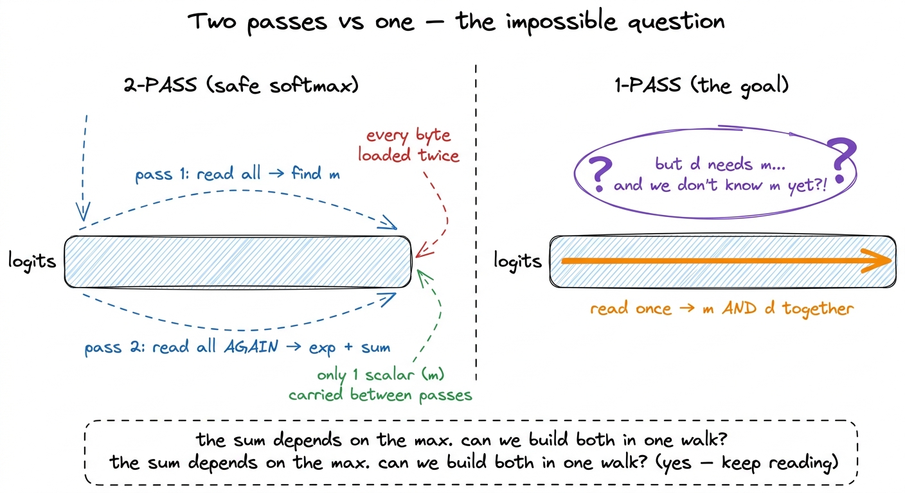
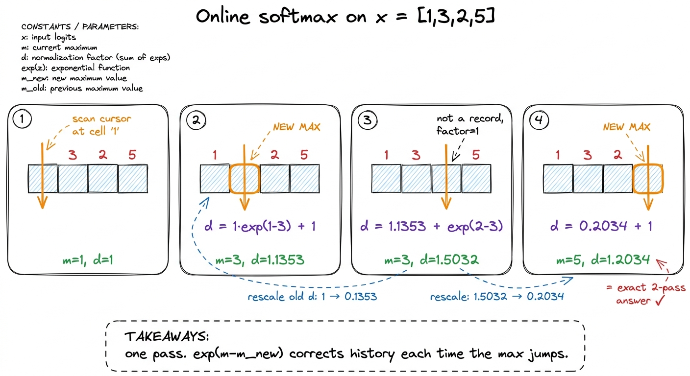
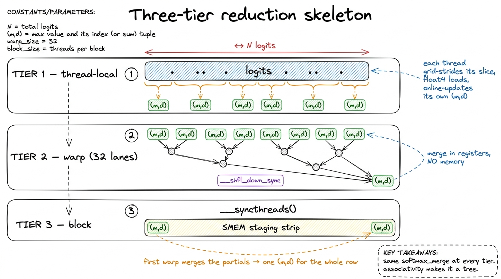
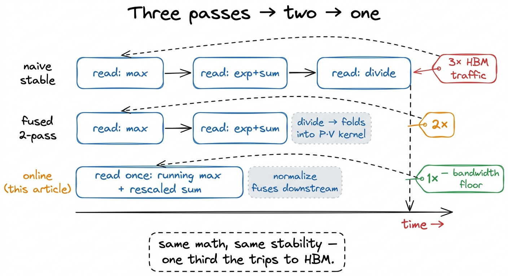
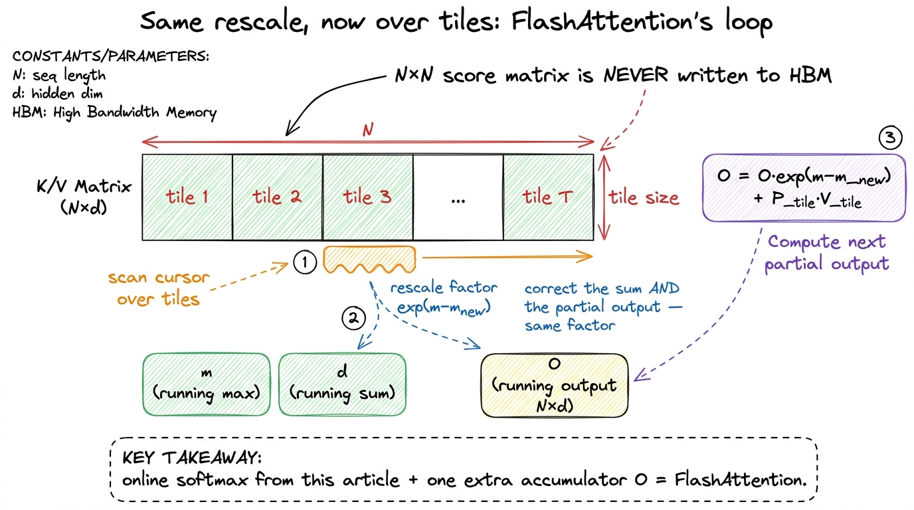

Softmax from scratch (and online)
Here is a question that sounds like it should have a boring answer: how do you turn a list of numbers into probabilities? You have a vector of scores — say the raw outputs of a classifier, or the attention logits inside a transformer — and you want to turn them into a set of positive numbers that add up to 1. That is what softmax does, and it is the single most-run reduction in all of deep learning. Every attention head computes one over its scores. Every classifier ends in one over its logits. A large model in production runs softmax billions of times per second.
On paper it is trivial. Exponentiate every number so they all become positive, then divide each by the total so they sum to 1. Two lines. And yet a naive softmax will silently produce NaN on real inputs, and even when it is correct it walks memory far more times than it needs to. This article is about turning that two-line formula into the thing that actually runs on an H100 — first making it correct, then making it fast, and along the way deriving the exact trick that FlashAttention is built on.
I want to be honest about scope up front. I am going to stay in NumPy and CUDA pseudocode rather than ship a fully tuned kernel. The reason is that the interesting part of softmax is not register blocking or wgmma scheduling — it is the math of the passes over memory. Get that math right and the same idea carries straight into attention, which is where softmax actually earns its keep. So this is really two lessons wearing one coat: how to write a correct, stable softmax, and how to think about reduction kernels in general — the family of kernels (sum, max, mean, norm, softmax) that collapse a big array down to a small answer.
Let me start by asking the question that reframes everything: is softmax a math problem or a memory problem?
First, what is a reduction, and why should the GPU care?
Before softmax specifically, let's build the mental model we'll reuse for the whole article. A reduction is any operation that takes N inputs and combines them into far fewer outputs using some associative combine — a sum takes N numbers and returns 1, a max takes N and returns 1. Softmax is a reduction with a pointwise tail: it reduces the vector to two scalars (a max and a sum), then uses those two scalars to rescale every element.
The reason the GPU cares about this shape is that a reduction reads a lot and computes a little. Contrast it with a matrix multiply. When you multiply two N × N matrices, you read about N² numbers but do about N³ multiply-adds — so each number you load from memory gets reused N times. The GPU can hide the cost of loading behind a mountain of arithmetic. A reduction is the opposite: you read N numbers, do a handful of operations on each, and produce almost nothing. There is no mountain of arithmetic to hide behind. The loads are the work.
That single distinction — how much math you do per byte you load — has a name, and it decides the fate of every kernel.

figure rendering · The two archetypes. A matmul buries its memory traffic under arithmetiWhy softmax is a memory problem, not a math problem
Let's put numbers on it, because the numbers are the whole argument. Take a row of N logits. Softmax does on the order of N exponentials, plus a couple of N-length reductions (one to find the max, one to sum). Call it a small constant number of FLOPs per element — a handful. And it reads N numbers and writes N numbers.
So the ratio of compute to memory traffic — the arithmetic intensity — is single-digit FLOPs per byte. Now compare that to the hardware. From the three regimes, an H100's ridge point sits around 295 FLOPs per byte: that is the intensity you need before the tensor cores can be kept busy. Softmax comes in at single digits. It is not a little below the ridge — it is a hundred times below it.1 Horace He's "Making Deep Learning Go Brrrr" makes the identical point at the whole-network level: normalization and pointwise ops are about 0.2% of BERT's FLOPs, yet they eat a wildly disproportionate share of the wall-clock. In his measurements normalization runs at ~250× fewer achieved FLOP/s than the matmuls and pointwise ops at ~700× fewer — precisely because they are memory-bound while the matmuls are compute-bound.
This means the tensor cores — the part of the GPU that does the heavy 19.5–989 TFLOP/s of matmul — are spectators during softmax. They sit idle. The kernel's runtime is set entirely by how fast we can move the logits between HBM and the chip.
Let me make the reframe explicit, because it changes what "optimize softmax" even means. We are not trying to make the exponentials faster. The hardware exponential instruction, MUFU.EX2, is nearly free relative to a load from HBM — a memory round-trip to HBM costs hundreds of cycles, an exp costs a few. Making exp twice as fast would change the runtime by a rounding error. The only lever that matters is: how many times do we walk the input array? Every optimization in the rest of this article is a memory optimization in disguise. Hold that thought — it is the pebble the whole article balances on.

figure rendering · Softmax lives at the bottom of the pyramid. The only lever is how manyThe naive formula, and why it explodes
Now the math. The textbook definition, for a vector x of length N, is: exponentiate each element, then divide by the sum of the exponentials.
def softmax_naive(x):
e = np.exp(x) # <-- overflows the moment max(x) is large
return e / e.sum()This is correct in exact arithmetic and broken on a real computer. Here is exactly why. An FP32 number can represent values up to about 3.4 × 10³⁸. The exponential exp(x) reaches that ceiling at around x ≈ 88.7 — so any logit larger than 88.7 makes exp(x) overflow to inf. Is that a contrived worst case? No. Attention logits are QKᵀ / √d, and on real trained models those routinely cross 88.7. It happens all the time.
And overflow is not a graceful failure. The moment a single element becomes inf, the sum becomes inf, and every output is inf / inf, which IEEE-754 defines as NaN. One bad element poisons the entire row. Worse, a NaN propagates through every downstream layer, so a single overflow silently corrupts the whole forward pass.
So we need a fix that never lets exp see a large positive number. And there is a beautiful one, based on an identity that everyone memorizes and few people actually derive. Softmax is invariant to shifting the input by a constant. Pick any constant c and subtract it from every element before exponentiating — the answer does not change at all.
Why? Because subtracting c inside the exponential pulls out a shared factor exp(−c) on both the top and the bottom, and it cancels:
$$\text{softmax}(x)_i = \frac{e^{x_i}}{\sum_j e^{x_j}} = \frac{e^{-c}\,e^{x_i}}{e^{-c}\sum_j e^{x_j}} = \frac{e^{x_i - c}}{\sum_j e^{x_j - c}}$$
This is exact, not an approximation — we lose no precision, we only move the numbers.2 This is worth pausing on because it is easy to assume any rescaling trick costs accuracy. It does not. The exp(−c) factor cancels algebraically, so the shifted formula and the unshifted formula compute the same real number; the shift only changes which intermediate values the floating-point hardware has to represent along the way. The smart choice of c is the row maximum m = max(x). Then the largest shifted value is exactly x - m = 0, so exp of it is 1, and every other exponent is ≤ 0, so every exp lands in (0, 1]. Overflow becomes structurally impossible — you cannot overflow a number that is at most 1.3 Underflow is the other tail: very negative shifted values give exp results near 0. But underflow to 0 is harmless here — it just means that logit contributes nothing to the sum, which is the correct answer for a score that far below the max. Overflow to inf poisons everything; underflow to 0 poisons nothing.
def softmax_stable(x):
m = x.max() # pass 1: the max
e = np.exp(x - m) # pass 2: shifted exponentials + their sum
return e / e.sum() # pass 3: normalizeCorrect and stable. But now put on the memory-cost glasses we ground earlier and count the passes over x. Pass one reads the whole vector to find m. Pass two reads the whole vector again to compute exp(x - m) and its sum. Pass three reads it again to divide. That is three reads of the input from HBM for one softmax. On a bandwidth-bound kernel, where runtime is roughly proportional to bytes moved, three passes is roughly three times the runtime floor. We can do much better without giving up a single bit of stability.
A tiny by-hand example to anchor everything
Before optimizing, let's do one softmax fully by hand on a four-element vector, so every later formula has something concrete to point at. Take:
x = [1, 3, 2, 5]Two-pass stable version. First the max: m = 5. Then the shifted exponentials:
exp(1-5) = exp(-4) = 0.0183
exp(3-5) = exp(-2) = 0.1353
exp(2-5) = exp(-3) = 0.0498
exp(5-5) = exp(0) = 1.0000Sum them: d = 0.0183 + 0.1353 + 0.0498 + 1.0000 = 1.2034. Divide each exponential by d and you get the softmax: [0.0152, 0.1124, 0.0414, 0.8310]. They are all positive and they sum to 1. Notice the biggest logit (5) got the biggest probability (0.83) — softmax is a "soft" version of picking the max, hence the name. Keep the numbers m = 5 and d = 1.2034 in your head; we are about to compute that same d a completely different way and watch it come out identical.
Two passes: fuse away the normalize
The third pass is the easiest to eliminate, so let's kill it first. Once we know m and the denominator d = Σ exp(x_j − m), the final normalization e_i / d is pointwise — each output depends only on its own input, m, and d. It needs no reduction. And a pointwise operation does not need a pass of its own: it can ride along with whatever kernel is going to read x next.
In attention, the very next thing is the P · V matmul — softmax's output P gets immediately multiplied by the value matrix V. That matmul has to read P anyway. So we fold the / d into the matmul's read: as each element streams in, divide it by d on the fly. The division never touches HBM as its own pass. This is operator fusion, and it is the single most important idea for memory-bound ops.4 Horace He's post has a lovely demonstration of why fusion is nearly free: a fused x.cos().cos() runs in almost exactly the same wall-clock as a single x.cos(), because the second cosine happens while the data is already in registers — the memory round-trip, not the arithmetic, was the cost. Softmax's / d tail is the same story: fused into the consumer, it is free.
So the honest pass count for a standalone softmax is two: one pass for the max, one pass for the exponential-and-sum. This is the standard "safe softmax," and it is what a good library ships when it cannot see the whole attention block at once.
But stare at those two passes with suspicion. The first pass reads all of x and throws away every value except one scalar, m. Then the second pass reads all of x again. We loaded every byte of the input twice, and the only thing we carried from the first read to the second was a single number. That feels wasteful, and it is. So here is the question that opens the door to FlashAttention:
Can we compute the max and the sum in the same single pass — before we have seen the max?
Your first instinct should be that this is impossible, and it is worth honoring that instinct. The sum Σ exp(x_j − m) depends on m. And m is the max over the whole vector, which we do not know until we have looked at every element. So how can we possibly start accumulating the sum before we know the very number the sum is defined in terms of? This is the crux of the whole article.

figure rendering · The tension that online softmax resolves: the denominator is defined iOnline softmax: one pass, with a running rescale
The resolution is to stop insisting we know the final max before we start. Instead, keep a running max and a running sum, and correct the sum retroactively whenever the running max moves. Walk the vector left to right, and maintain two scalars:
m— the max of everything seen so fard— the sum ofexp(x_j − m)over everything seen so far, relative to the current runningm
That second definition is the subtle one. d is always measured against whatever m happens to be right now, not against the final max. So when m changes, the meaning of every term already inside d changes too, and we have to fix them.
Here is the update when a new element x_i arrives. First compute the new running max, m_new = max(m, x_i). Now, the old d was a sum of terms exp(x_j − m_old). We want them expressed relative to m_new instead, i.e. we want exp(x_j − m_new). The ratio between the two is a single shared factor:
$$\frac{e^{x_j - m_{new}}}{e^{x_j - m_{old}}} = e^{(x_j - m_{new}) - (x_j - m_{old})} = e^{m_{old} - m_{new}}$$
It does not depend on x_j at all! Every term in the old sum is off by the same factor exp(m_old − m_new). So we can rescale the entire accumulated sum in one multiply, then add the new element's contribution:
m_new = max(m, x_i)
d_new = d * exp(m - m_new) + exp(x_i - m_new)
m = m_new
d = d_newThat d * exp(m - m_new) is the whole idea. Let's check the two cases it silently handles:
- The max did not change (
x_iwas not a new record). Thenm_new = m, the factorexp(m − m_new) = exp(0) = 1, and the update degenerates tod = d + exp(x_i − m)— a plain running sum, exactly what you'd write for a normal accumulation. - The max jumped (
x_iset a new record). Thenm_new = x_i > m, som − m_new < 0, and the factorexp(m − m_new)is strictly less than1. It shrinks every previously-accumulated term into the new, larger reference frame — precisely as if we had known the new max from the beginning.
The result is a single pass over x that produces both m and d — one read of the input instead of two.5 This is algebraically exact, not a numerical approximation. After the whole row, d equals Σ exp(x_j − m_final) to the last representable bit — identical to the two-pass version. The online update just distributes the max-subtraction across the walk instead of doing it all at the end. Same output, different schedule.
Watch it run on our by-hand vector
Claims about exactness are cheap; let's actually run the online update on x = [1, 3, 2, 5] and confirm it lands on d = 1.2034, the same denominator we computed the two-pass way. Start with m = −∞, d = 0.
See 1. m_new = max(−∞, 1) = 1. d = 0 · exp(−∞ − 1) + exp(1 − 1) = 0 + 1 = 1. Now m = 1, d = 1.
See 3. New record. m_new = 3. Rescale the old sum: d = 1 · exp(1 − 3) + exp(3 − 3) = 1 · 0.1353 + 1 = 1.1353. Now m = 3, d = 1.1353. Notice the old d = 1 got shrunk to 0.1353 before the new term was added — the rescale in action.
See 2. Not a record (2 < 3). Factor is exp(3 − 3) = 1. d = 1.1353 · 1 + exp(2 − 3) = 1.1353 + 0.3679 = 1.5032. Now m = 3, d = 1.5032.
See 5. New record. m_new = 5. d = 1.5032 · exp(3 − 5) + exp(5 − 5) = 1.5032 · 0.1353 + 1 = 0.2034 + 1 = 1.2034. Now m = 5, d = 1.2034.
There it is — m = 5, d = 1.2034, bit-for-bit the two-pass answer, computed in a single left-to-right walk. The 5 at the end triggered one final rescale that pulled the whole accumulated sum down into the correct frame. That is the entire trick, and everything about FlashAttention grows out of this one loop.

figure rendering · The online update on a concrete vector. Each new record triggers a sinHere is the whole thing as a scalar loop — the reference implementation before we parallelize it:
def softmax_online(x):
m = -np.inf # running max
d = 0.0 # running denominator, relative to current m
for xi in x: # single pass
m_new = max(m, xi)
d = d * np.exp(m - m_new) + np.exp(xi - m_new)
m = m_new
return np.exp(x - m) / d # pointwise; fuses into the consumerThe final np.exp(x - m) / d line is the pointwise normalize we already agreed folds into the downstream kernel. So online softmax is genuinely one pass to reduce, plus a free pointwise tail — the minimum possible HBM traffic for a stable softmax. You cannot do a stable softmax in fewer than one read of the input, and this hits that floor.
The reduction kernel structure
Now the GPU part — because a scalar left-to-right loop is not how a GPU works. A GPU has thousands of threads; making them crawl a row one element at a time would waste the whole machine. We want a whole thread block to chew through one row cooperatively, in parallel.
The thing that lets us parallelize at all is that the online update is associative: it does not matter how you group the elements, you get the same (m, d). Thread A can reduce the first half of the row, thread B the second half, and then we merge their two partial (m, d) states with the very same rescale logic. Associativity is what turns a sequential scan into a tree.
The pattern is the canonical three-tier reduction, and it is worth internalizing cold, because every reduction kernel you will ever write — sum, max, L2-norm, softmax — has this exact skeleton. Below is the map; then we walk each tier.

figure rendering · The universal reduction skeleton: threads, then warps, then the blockTier 1 — thread-local. Each thread strides across the row with a grid-stride loop (thread t handles elements t, t + blockDim, t + 2·blockDim, …), folding its slice into a private (m, d) pair using the online update. We use float4 vectorized loads so each thread pulls 16 bytes per transaction. And critically, the stride pattern makes consecutive threads read consecutive addresses, so the loads coalesce.6 On a bandwidth-bound kernel the load pattern is the performance. If threadIdx.x maps to consecutive logits, a warp's 32 loads collapse into a few 128-byte memory sectors — one transaction serves the whole warp. Get the mapping wrong (each thread striding by a big power of two, say) and you replay a separate transaction per thread, cutting effective bandwidth by up to 32×. This is the same coalescing tax from the GEMM ladder, and here it is the entire ballgame because there's no arithmetic to hide it behind.
Tier 2 — warp-level. The 32 threads of a warp now each hold a partial (m, d), and they combine without touching memory at all, using __shfl_down_sync to pass values directly between lanes' registers in a tree. But — and this is the trap — you cannot just + the d values. Each thread's d is relative to its own local max, so the sums are in different reference frames. The warp reduction has to be the online merge: given two states (m_a, d_a) and (m_b, d_b), the combined max is max(m_a, m_b) and the combined sum rescales both sides into it.
// merge two partial (m, d) states — the associative online combine
__device__ float2 softmax_merge(float2 a, float2 b) {
float m = fmaxf(a.x, b.x);
float d = a.y * __expf(a.x - m) + b.y * __expf(b.x - m);
return make_float2(m, d);
}
// warp reduction over lanes, no shared memory
for (int off = 16; off > 0; off >>= 1) {
float2 other;
other.x = __shfl_down_sync(0xffffffff, s.x, off);
other.y = __shfl_down_sync(0xffffffff, s.y, off);
s = softmax_merge(s, other);
}Notice softmax_merge is symmetric — it merges two states regardless of order or size. That is the same combine that handled a single new element in the scalar loop (a single element is just a state (x_i, 1)), now generalized to merging two arbitrary partial reductions. One function, every tier.
Tier 3 — block-level. After the warp reduction, each warp's lane 0 holds that warp's partial (m, d). There are at most 32 warps in a block, so we write those partials to a tiny shared memory (SMEM) staging array, call __syncthreads() so every warp's write is visible, then have the first warp reduce the ≤ 32 partials with the same softmax_merge tree. The block's result is a single (m, d) for the entire row — computed with one read of the row from HBM and zero intermediate round-trips to global memory. Everything after the initial load happens in registers and SMEM, on-chip, at TB/s.7 For very long rows — attention over long context — a single block per row can run out of parallelism (a 128-thread block reducing a 100k-element row leaves most of the SM idle). Then you split one row across several blocks and add a second, tiny reduction pass over the per-block (m, d) pairs. Because the merge is associative, this "reduce the reducers" step is just softmax_merge again. It composes cleanly at any level — which is exactly the property FlashAttention exploits to stitch results across tiles.
Where this lands, and where it goes
The payoff is a bandwidth story, so let me tell it in bandwidth. The naive stable kernel walks HBM three times. The fused two-pass kernel walks it twice. The online kernel walks it once. On a memory-bound kernel whose floor is set by that traffic, going from three passes to one approaches a 3× speedup on the softmax itself — with the honest caveat that the exact factor depends on how much of the input the L2 cache holds between passes, so treat 3× as the ceiling, not a promise.8 Why it's a ceiling and not a guarantee: for short rows, the second and third passes may hit data still warm in L2 (~50 MiB, ~10 TB/s) rather than cold HBM, so the naive kernel isn't paying full HBM price on every pass. The online kernel's advantage is largest exactly when rows are long enough to blow past L2 — which is the regime attention lives in, so this is the good news. And every bit of that speedup comes from touching memory less, not from computing faster.
The way you confirm you got it right is to profile it and look at achieved bandwidth. A correct online softmax will show HBM bandwidth climbing toward the 3.35 TB/s ceiling while the FLOP/s stays microscopic. That is the fingerprint of a healthy reduction kernel: pinned against memory bandwidth, tensor cores idle by design. If instead you see low bandwidth and low FLOP/s, you have a coalescing or occupancy bug — the kernel is stalled on something other than the memory it should be saturating.

figure rendering · The whole optimization in one picture: identical output and identicalWhy this was worth deriving: it is FlashAttention's inner loop
I put this article before the attention articles on purpose, because online softmax is the load-bearing idea underneath FlashAttention, and once you have the rescale identity, FlashAttention stops being mysterious.
Here is the connection. Attention computes softmax over a row of scores S = QKᵀ, then multiplies by V. For a long context, that score row is enormous — an N × N score matrix would be, for N = 100k, ten billion entries, 40 GB in FP32. You cannot afford to write it to HBM and read it back. So FlashAttention never materializes it. It streams tiles of K and V through SMEM, computing a slice of the scores at a time, and multiplying each slice into a running output accumulator immediately.
But that streaming has a fatal-looking problem, and it is exactly the problem we already solved. FlashAttention sees the scores a tile at a time — it never has the whole row in memory at once. So it cannot do a two-pass softmax; it never sees the full row of scores before it has to start accumulating P · V. It is forced to reduce online. And the online update is precisely what rescues it: keep a running (m, d) just like here, plus a running output accumulator O. Every time a new tile of scores pushes the running max higher, rescale the partial output O by the same exp(m − m_new) factor we derived — because those already-accumulated output terms were computed in the old, wrong reference frame, and they need correcting for identical reasons the sum d did.

figure rendering · FlashAttention is the online softmax from this page with one addition:That is the whole game. Softmax and the value-matmul get fused into one streaming pass that never writes the N × N score matrix to HBM at all — turning attention from a memory-bound, HBM-thrashing operation into one that keeps everything on-chip. FlashAttention's dramatic speedups are not from a faster matmul; they are from not moving the score matrix, which is the same lesson this whole article has been hammering: the win is fewer trips to HBM.
So the reduction skeleton and the rescale identity on this page are not a warm-up exercise. They are FlashAttention's inner loop, minus the matmul. Every number we derived by hand on [1, 3, 2, 5] — the running max, the exp(m − m_new) rescale, the associative merge — reappears verbatim inside the most important kernel in modern inference. We build that next.